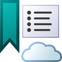

Getting Started
{Screen shot img}
Add a web page to the reading list by clicking the button on the address bar, or selecting Add to Read Next from the browser context menu.
You can't add extension pages such as this page, or Firefox pages such as Add-ons Manager and Firefox Settings.
{Screen shot img}
Use the reading list sidebar to browse or search for saved links to the web pages you want to resume reading. Toggle open or closed by clicking on the browser toolbar.
{Screen shot img}
Sync your reading list to the cloud with Dropbox to make it available on your other devices with Firefox and Read Next installed.